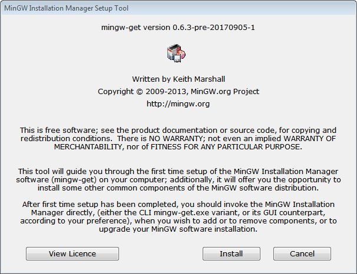
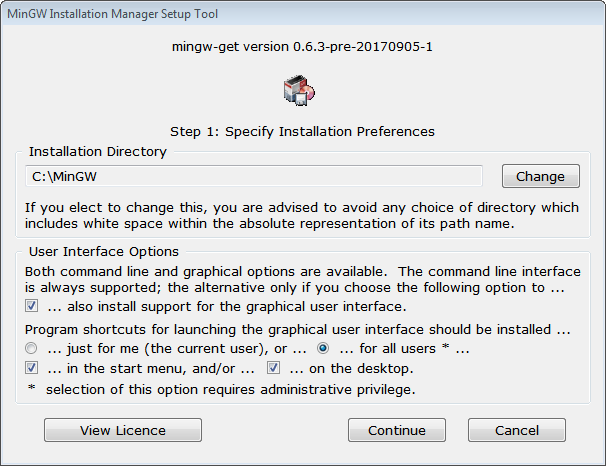
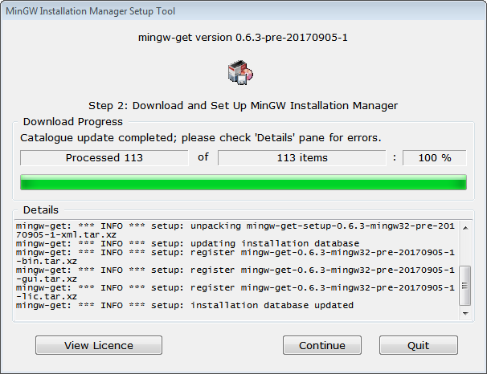
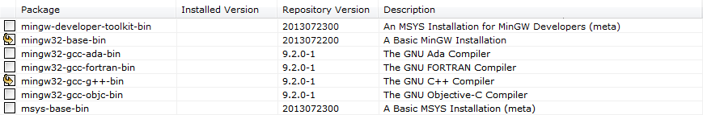
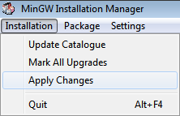
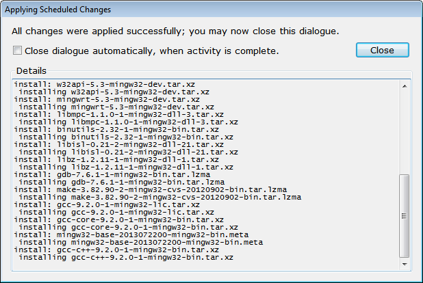
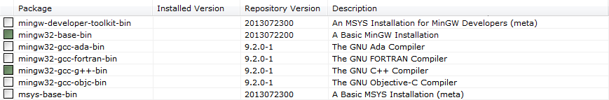

Порядок выполнения работы
- Узнать цель работы.
- Получить задание.
- Подготовить техническое и программное обеспечение.
- Внимательно ознакомиться с теоретическими сведениями и примером выполнения задания.
- Выполнить задание, одновременно подготавливая черновик отчёта.
- Оформить беловой вариант отчёта.
- Сдать работу преподавателю.
Цель работы
Получить навыки реализации наборов тестов для инструмента автоматизации тестирования.
Задание
Выполнить действия, перечисленные в примере выполнения задания.
Реализовать собственный проект, содержащий не менее 3 функций. Повторить действия, перечисленные в примере выполнения задания, применительно к своему проекту.
Примерные темы проектов:
- программы записи десятичного числа в двоичной системе счисления;
- программы записи двоичного числа в десятичной системе счисления;
- программы для вычисления наибольшего общего делителя двух целых чисел;
- программы для сдвига элементов списка;
- программы, реализующей сортировки элементов списка «пузырьком»;
- программы, реализующей поиск максимального значения в двумерном массиве;
- программы, реализующей поиск минимального значения в двумерном массиве;
- программы, вычисляющей среднее арифметического в двумерном массиве;
- программы, суммирующей элементы главной диагонали квадратной матрицы;
- программы, реализующей перемешивание элементов списка.
Обязательное техническое и программное обеспечение
| Тип | Характеристика, наименование, версия |
|---|---|
| Браузер | Совместимый с рекомендацией W3C HTML5 |
| Текстовый процессор | Совместимый с OpenDocument v1.0 |
| Текстовый редактор | Совместимый с UTF‑8 без BOM |
| Тип | Характеристика, наименование, версия |
|---|---|
| Операционная система | Windows 7 (сборка 7600.16385.090713-1255) или выше |
| Программная среда | .NET Framework 4.5.2 1 или выше |
| Система программирования | MinGW Compiler Suite |
MinGW Compiler Suite невозможно установить в Windows XP Service Pack 3 и более ранних версиях системы.
| Тип | Характеристика, наименование, версия |
|---|---|
| Операционная система | 64‑битная, совместимая с пакетами deb или RPM |
| Система программирования | GCC |
| Тип | Характеристика, наименование, версия |
|---|---|
| Операционная система | OS X 10.10 или выше, macOS 10.12 или выше |
| Система программирования | Clang |
Теоретические сведения
Автоматизация тестирования подразумевает применение специализированного программного обеспечения, называемого инструментами автоматизации тестирования и позволяющего осуществлять следующие операции:
- генерация тестовых данных (например, значений аргументов функции);
- статический анализ (например, контроль оформления исходного кода, который не требует выполнения программы);
- выполнение контрольных примеров по списку.
Инструменты автоматизации тестирования могут разрабатываться в организации или быть получены извне как коммерческий продукт либо как программное обеспечение с открытым исходным кодом. Например, для тестирования исходного кода на языке PHP может применяться PHPUnit, для C# — xUnit.net, для C и C++ — Catch2.
Пример выполнения задания
Установка пакетов MinGW
Посредством браузера перейдите на сайт http://www.mingw.org/ и обратитесь к разделу Downloads. Попав на страницу загрузок, проследуйте по гиперссылкам по пути MinGW Installation Manager (mingw-get)⏵MinGW-Get Version 0.6.3 (Beta). Вам будет предложено несколько дистрибутивов, из которых целесообразно выбрать
mingw-get-setup.exe.Скачав
mingw-get-setup.exeна свой компьютер, запустите его от имени администратора.MinGW Installation Manager Setup Tool — это инструмент для установки и настройки менеджера пакетов mingw-get.
В окне, показанном на рисунке 1, нажмите на кнопку Install («Установить»).

Титульный экран MinGW Installation Manager Setup Tool Будет открыто окно, показанное на рисунке 2. Желательно не изменять настройки. Нажмите на кнопку Continue («Далее»).

Окно с настройками mingw-get Будет открыто окно, показанное на рисунке 3. Дождитесь установки mingw-get и обновления перечня установленных пакетов, после чего нажмите на кнопку Continue («Далее»).

Окно установки mingw-get Будет открыто главное окно mingw-get с перечнем доступных и (или) установленных пакетов. Для выполнения работы Вам потребуются как минимум пакеты
mingw32-base-bin(базовый метапакет, указывающий на компилятор C, редактор связей, отладчик, несколько библиотек) иmingw32-gcc-g++-bin(компилятор C++). Если какой‑либо из указанных пакетов не отмечен зна́ком «■» зелёного цвета, нажмите правой кнопкой мыши на соответствующий элемент перечня и выберите из контекстного меню пункт Mark for installation («Отметить для установки»). Напротив отмеченного пакета должен появиться знак «↪» (рисунок 4).
Пакеты, отмеченные для установки В главном меню выберите пункт Installation⏵Apply changes (Установка⏵Применить изменения).

Переход к применению изменений Будет открыто окно, показанное на рисунке 6. Нажмите на кнопку Apply («Применить»).

Согласие на применение изменений Дождитесь окончания загрузки и установки пакетов и нажмите на кнопку Close («Закрыть») в окне с журналом установки.

Установка пакетов завершена В главном окне mingw-get будет выведен перечень, в котором установленные пакеты будут отмечены квадратами («■») зелёного цвета.

Главное окно mingw-get Для завершения установки необходимо добавить в системную переменную
Pathпуть к каталогу, где размещены утилиты MinGW (по умолчанию —C:\MinGW\bin). Для этого необходимо открыть редактор системных переменных:- в Windows 7 откройте Мой компьютер⏵Свойства⏵Изменить параметры⏵Дополнительно⏵Переменные среды…
Выберите системную переменную
Pathи нажмите на кнопку «Изменить…». Если редактор выводит значениеPathв строку, то впишите путь к каталогу, где размещены утилиты MinGW (по умолчанию —C:\MinGW\bin), перед этой строкой, отделив от следующего пути точкой с запятой.Запустите или перезапустите интерпретатор команд (
cmd) и введите в него:g++ --versionОжидаемый вывод:
g++ (MinGW.org GCC Build-20200227-1) 9.2.0 Copyright (C) 2019 Free Software Foundation, Inc. This is free software; see the source for copying conditions. There is NO warranty; not even for MERCHANTABILITY or FITNESS FOR A PARTICULAR PURPOSE.
Реализация проекта на языке C++
Создание каталога проекта
Создайте в домашнем каталоге каталог my-project, а уже в нём воссоздайте следующую иерархию каталогов:
bin— для загрузочных модулей;include— для заголовков исходных модулей;obj— для объектных модулей;tests— для объектных модулей тестовых наборов;
src— для реализации исходных модулей;tests— для наборов тестов.
В каталогах include и src будут размещены файлы с расширениями имён hpp и cpp — исходные модули, содержащие код на языке C++. В результате их компиляции появятся соответствующие объектные модули — эти файлы с расширением имени o будут размещены в каталоге obj и его подкаталогах. Как известно, объектные модули уже не содержат кода C++, но и не могут быть выполнены операционной системой, а предназначены для компоновки посредством редактора связей (link’ера) в один или несколько загрузочных модулей. Загрузочные модули — это файлы, исполняемые операционной системой; они будут размещены в каталоге bin и получат расширение имени в зависимости от назначения и операционной системы (exe, dll, so и т. п.).
Переход в каталог проекта
Посредством интерпретатора команд (cmd) перейдите в каталог проекта.
cd %userprofile%\my-projectМетоды проекта
Проект направлен на реализацию одной‑единственной функции — функции вычисления факториала. Факториал вычисляется только для неотрицательных чисел. Факториал числа \(n = 0\) равен единице. Факториал натурального числа \(n\) определяется как произведение всех натуральных чисел от 1 до \(n\) включительно:
$$n! = 1 \times \ldots \times n = \prod_{i = 1}^{n}i.$$
Рекурсивная функция:
$$n! = (n - 1)! \cdot n.$$
Реализуйте функцию, вписав приведённый ниже исходный код в указанные файлы.
Создание файла include/factorial.hpp
#ifndef FACTORIAL_HPP
#define FACTORIAL_HPP
unsigned int factorial(unsigned int number);
#endif
Создание файла src/factorial.cpp
#include "factorial.hpp"
unsigned int factorial(unsigned int number) {
if (number <= 1) {
return 1;
}
return factorial(number - 1) * number;
}
Компиляция
Компилируем (опция -c) исходный модуль src/factorial.cpp и создаём объектный модуль obj/factorial.o (опция -o). Опция -I указывает, в каком каталоге компилятору следует искать файлы, подключаемые посредством макроса #include.
g++ -c -I include -o obj/factorial.o src/factorial.cppУбедитесь, что в каталоге obj появился файл factorial.o.
Компиляция тестовой среды
Скомпилируем тестовую среду́ (англ. test environment по ГОСТ Р 56920‑2016), основанную на каркасе Catch2.
Посредством браузера скачайте с веб‑страницы https://github.com/catchorg/Catch2/releases/ файл
catch.hppпоследней версии.Разместите файл
catch.hppв каталогеtests.Создайте файл
tests/main.cppсо следующим содержимым:#define CATCH_CONFIG_MAIN #include "catch.hpp"Скомпилируйте файл
tests/main.cpp:g++ -c -o obj/tests/main.o tests/main.cppУбедитесь, что в каталоге
obj/testsпоявился файлmain.o.
Необходимо отметить, что нет необходимости заново компилировать тестовую среду при добавлении, изменении или удалении наборов тестов: достаточно скомпилировать обновлённые наборы тестов и скомпоновать результат с объектным модулем obj/tests/main.o.
Реализация набора тестов
Составляем таблицу с тестовыми вариантами для функции
factorial().Входные данные Ожидаемые выходные данные 0 1 1 1 2 2 3 6 4 24 5 120 6 720 7 5040 ... ... Конечно, этот набор тестов, основанный на последовательном переборе значений аргументов, крайне неэффективен. Выполняя следующие работы, Вы научитесь сводить количество тестовых вариантов к минимуму, достаточному для достижения целей тестирования.
Реализуем тестовый набор для Catch2 — создаём файл
tests/factorial.cppсо следующим содержимым:#include "catch.hpp" #include "../src/factorial.cpp" TEST_CASE("Factorials are computed", "[factorial]") { REQUIRE(factorial(0) == 1); REQUIRE(factorial(1) == 1); REQUIRE(factorial(2) == 2); REQUIRE(factorial(3) == 6); REQUIRE(factorial(4) == 24); REQUIRE(factorial(5) == 120); REQUIRE(factorial(6) == 720); REQUIRE(factorial(7) == 5040); }Компилируем (опция
-c) исходный модульtests/factorial.cppдля создания объектного модуляobj/tests/factorial.o(опция-o). Опция-Iуказывает на каталогinclude, в котором компилятору следует искать файлы, подключаемые посредством макроса#includeбез указания пути.g++ -c -I include -o obj/tests/factorial.o tests/factorial.cppУбедитесь, что в каталоге
obj/testsпоявился файлfactorial.o.Компонуем объектные модули
obj/tests/main.oиobj/tests/factorial.oдля создания тестовой среды — загрузочного модуляbin/testrunner(опция-o).g++ obj/tests/main.o obj/tests/factorial.o -o bin/testrunnerУбедитесь, что в каталоге
binпоявился файлtestrunner.exe(в Windows) илиtestrunner(в Unix‑подобных операционных системах).Запускаем тестовую среду:
# В Windows bin\testrunner # В Unix bin/testrunner
Структура отчёта
Отчёт о выполнении работы должен содержать следующие разделы:
- постановка задачи;
- цель работы;
- аппаратные и программные средства;
- теоретические сведения;
- входные и выходные данные (по необходимости);
- тесты (по необходимости);
- исходный код;
- результаты работы.